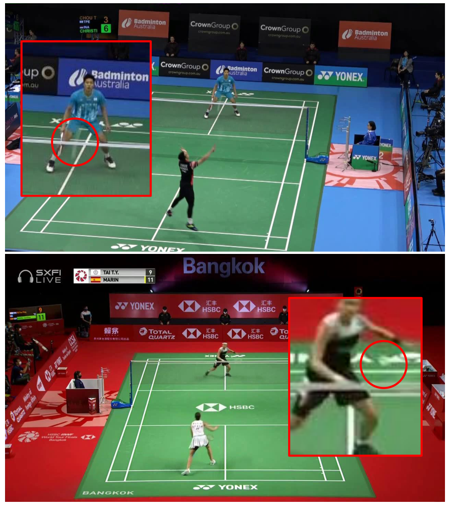
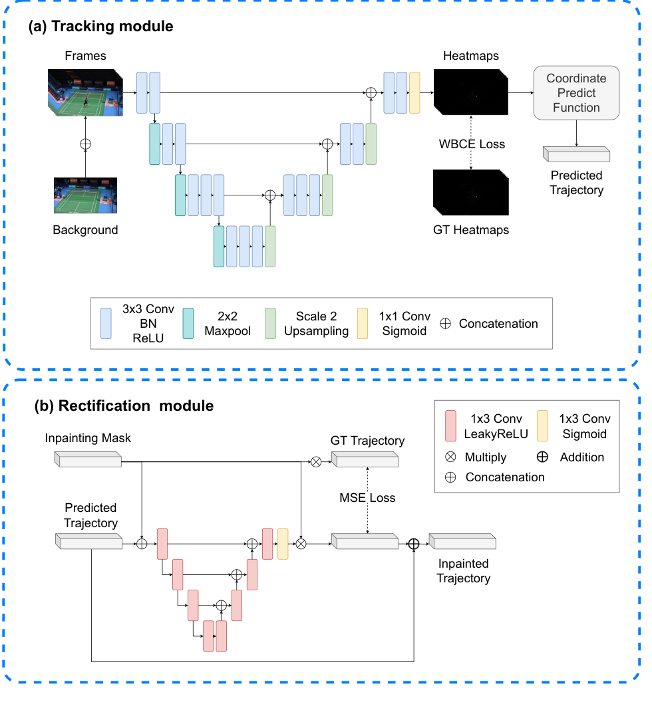
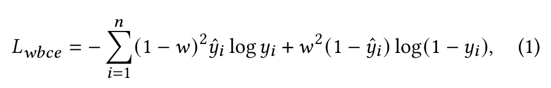
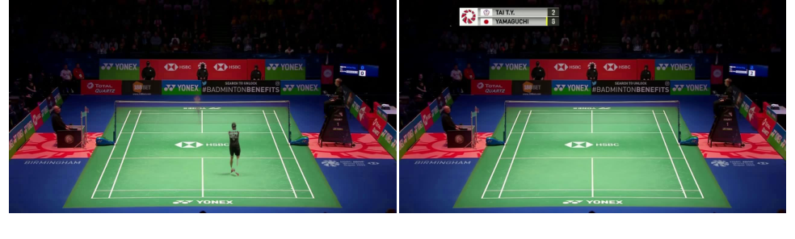
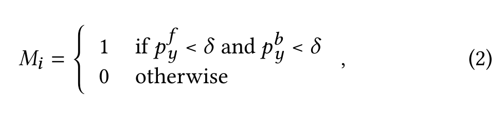
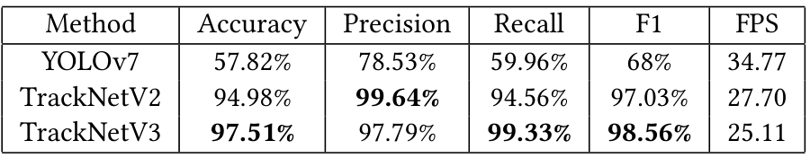
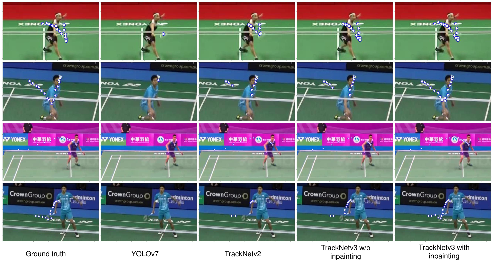
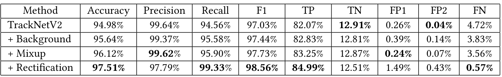
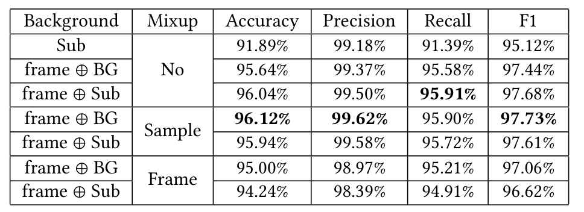
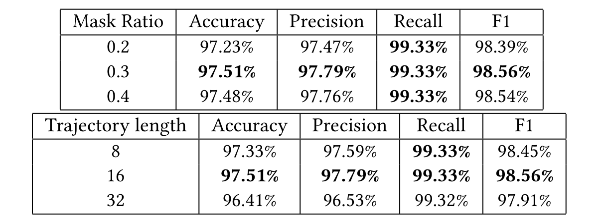

版本、来源与译文说明 · Source & translation notes
译者核对说明：原文的数值差异与阅读边界
本文研究二维羽毛球定位与轨迹补全，尚未实现三维重建。“最新”等表述对应 2023 年论文写作时点。
摘要引用 TrackNetV2 原研究准确率 87.72%；第 4.3 节及表 1 使用作者重新实现的 TrackNetV2，准确率为 94.98%。两者不是同一基线实现。
引言将 YOLOv7 准确率写作 53.47%，而表 1 为 57.82%。译文分别保留原数字，未自行统一。
表 2 图注称 FN 等同于漏检率；但表中 FN 数值与正文定义的 1−Recall 不相等。例如最后一行 FN 为 0.57%，而 1−99.33% 为 0.67%。阅读时应区分统计口径；原文未在此处完整说明分母。
式（2）使用小于号与阈值 δ=30，按原图保留，未擅自改变比较方向。第 3.4 节的“超参数使用 Xavier 初始化”等措辞也忠实保留。原稿末尾与 2023 年不一致的收稿日期另附说明。
TrackNetV3: Enhancing ShuttleCock Tracking with Augmentations and Trajectory RectificationTrackNetV3：利用数据增强与轨迹校正改进羽毛球跟踪
ABSTRACT摘要
We present TrackNetV3, a sophisticated model designed to enhance the precision of shuttlecock localization in broadcast badminton videos. TrackNetV3 is composed of two core modules: trajectory prediction and rectification. The trajectory prediction module leverages an estimated background as auxiliary data to locate the shuttlecock in spite of the fluctuating visual interferences. This module also incorporates mixup data augmentation to formulate complex scenarios to strengthen the network’s robustness. Given that a shuttlecock can occasionally be obstructed, we create repair masks by analyzing the predicted trajectory, subsequently rectifying the path via inpainting. This process significantly enhances the accuracy of tracking and the completeness of the trajectory. Our experimental results illustrate a substantial enhancement over previous standard methods, increasing the accuracy from 87.72% to 97.51%. These results validate the effectiveness of TrackNetV3 in progressing shuttlecock tracking within the context of badminton matches. We release the source code at https://github.com/qaz812345/TrackNetV3.
我们提出 TrackNetV3，这是一种旨在提高羽毛球比赛转播视频中羽毛球定位精度的模型。TrackNetV3 由轨迹预测与轨迹校正两个核心模块组成。轨迹预测模块将估计得到的背景作为辅助信息，在不断变化的视觉干扰下定位羽毛球。该模块还引入 mixup 数据增强，构造复杂场景，以提升网络的鲁棒性。由于羽毛球有时会被遮挡，我们通过分析预测轨迹来生成补全掩膜，再通过补全操作校正轨迹。这一过程显著提高了跟踪准确性和轨迹完整性。实验结果显示，与以往的标准方法相比，该方法有显著改进，准确率由 87.72% 提高至 97.51%。这些结果验证了 TrackNetV3 在提升羽毛球比赛跟踪效果方面的有效性。我们在 https://github.com/qaz812345/TrackNetV3 发布源代码。
CCS CONCEPTSCCS 分类概念
• Computing methodologies →Tracking; Object detection.
• 计算方法 → 跟踪；目标检测。
KEYWORDS关键词
Badminton, Shuttlecock tracking, trajectory rectification
羽毛球运动；羽毛球跟踪；轨迹校正。
1 INTRODUCTION1 引言
The exponential growth of deep learning research in recent years has led to its widespread application in numerous domains, one of which is sports analytics. With the advent of the internet, abundant game footage is now available for in-depth analysis. Machine learning has become a key player in this field, paving the way for automated systems that enable efficient game analysis [1, 4, 7, 24, 28].
近年来，深度学习研究呈指数级增长，推动了它在众多领域的广泛应用，体育分析就是其中之一。随着互联网的发展，大量比赛视频已可用于深入分析。机器学习成为这一领域的重要技术，为能够高效分析比赛的自动化系统铺平了道路 [1, 4, 7, 24, 28]。
In this context, our work is dedicated to the tracking of shuttlecocks in badminton, a sport with a global footprint that requires its participants to engage in strategic planning.
在这一背景下，我们的工作专注于羽毛球运动中的球体跟踪。羽毛球运动在全球范围内开展，并要求参与者进行战术规划。
The unique attributes of a shuttlecock, including its lightweight nature and rapid motion, present particular challenges for tracking. Firstly, during a smash, a shuttlecock can achieve instantaneous peak velocities reaching 426 km/h, making it the fastest moving object in all racquet sports. This rapid movement often leads to motion blur when captured by standard cameras, causing a ghosting effect of the shuttlecock. Secondly, the wide-angle perspective of court view shots usually reduces the shuttlecock to a minuscule portion of the frame, further complicating the tracking task. Thirdly, a shuttlecock can blend seamlessly into the background components, such as the net and court lines, rendering it nearly invisible if its dynamics are not analyzed through consecutive video frames.
羽毛球重量轻、运动速度快等独特属性给跟踪带来了特殊挑战。首先，杀球时羽毛球的瞬时峰值速度可达 426 km/h，使其成为所有持拍运动中速度最快的运动物体。普通相机拍摄这种高速运动时常会出现运动模糊，产生羽毛球的拖影。其次，球场全景镜头的广角视角通常会使羽毛球在画面中只占极小区域，进一步增加跟踪难度。第三，羽毛球可能与球网、场地线等背景元素混为一体；如果不借助连续视频帧分析其动态，羽毛球可能几乎无法辨认。

Figure 1: Given the small size of shuttlecocks and their tendency to blend into backgrounds, tracking them can be challenging. For clarity, we have marked the shuttlecock positions using red circles. Note that our TrackNetV3 can successfully detect the shuttlecocks in these two examples.
图 1：羽毛球体积小，且容易与背景混淆，因此跟踪颇具挑战。为便于观察，我们用红圈标出了羽毛球的位置。注意，TrackNetV3 能够成功检测出这两个示例中的羽毛球。
图表内术语：红圈标记羽毛球位置。
Given these challenges, our goal is to develop a more precise shuttlecock tracking system. The suggested TrackNetV3 consists of two fundamental modules: trajectory prediction and rectification. Building on the foundation of TrackNetV2, the trajectory prediction module considers a series of video frames to generate corresponding heat maps that indicate the positions of the shuttlecock. We further enrich this model by feeding it an estimated background, which acts as supplemental information to better differentiate the shuttlecock from various visual distractions. The trajectory prediction module also incorporates mixup data augmentation, creating complex scenarios that enhance the network’s robustness. Recognizing that a shuttlecock may occasionally be concealed, making its true position undeterminable through visual cues, we rectify the trajectory based on the shuttlecock’s motion dynamics. Specifically, we generate repair masks by assessing the predicted trajectory and train the rectification module that considers the predicted trajectory and the mask for rectification. This process considerably enhances the accuracy of tracking and the completeness of the trajectory.
针对这些挑战，我们的目标是开发更精确的羽毛球跟踪系统。提出的 TrackNetV3 包含轨迹预测与轨迹校正两个基本模块。轨迹预测模块以 TrackNetV2 为基础，通过一系列视频帧生成对应热图，指示羽毛球位置。我们进一步向模型输入估计背景，将其作为补充信息，以更好地区分羽毛球和各种视觉干扰。轨迹预测模块还采用 mixup 数据增强，构造复杂场景以提高网络鲁棒性。考虑到羽毛球有时会被遮住，无法通过视觉线索确定其真实位置，我们利用羽毛球的运动动态来校正轨迹。具体而言，我们评估预测轨迹并生成补全掩膜，再训练一个同时接收预测轨迹和掩膜的校正模块。这个过程显著提高了跟踪准确性与轨迹完整性。
Our system was assessed against advanced techniques like YOLOv7 and TrackNetV2. The results of these comparative experiments demonstrate that TrackNetV3 significantly outperforms these baseline methods, yielding accuracies of 97.51%, contrasted with 94.98% for TrackNetV2 and 53.47% for YOLOv7. Furthermore, we conducted an ablation study to evaluate the presented tracking strategies. This study corroborates the efficacy of the proposed strategies in tracking swift and minuscule shuttlecock trajectories in broadcast badminton videos.
我们将系统与 YOLOv7、TrackNetV2 等先进技术进行了比较。对比实验表明，TrackNetV3 明显优于这些基线方法，准确率达到 97.51%，而 TrackNetV2 为 94.98%，YOLOv7 为 53.47%。此外，我们开展了消融实验，评估所提出的跟踪策略。实验验证了这些策略在比赛转播视频中跟踪高速、微小羽毛球轨迹的有效性。
2 RELATED WORKS2 相关工作
Deep learning models have been widely used in tracking balls across various sports, encompassing tennis, golf [23, 29], and badminton [12, 25]. This task shares considerable overlap with object detection applications and can be executed using conventional methods like R-CNN (regions with convolutional neural network features) [8, 9, 21] and YOLO (you only look once) [18]. Specifically, R-CNN employs a region proposal network (RPN) to recognize objects and suggest numerous regions of interest (ROIs) as candidates. These ROIs undergo categorization and localization, producing the final category and bounding box for all objects. YOLO approaches detection as a regression problem. It divides the image into an 𝑁×𝑁grid, predicting multiple results centered on each cell. Overlapping results are discarded using confidence scores and Non-Maximum Suppression. YOLO has experienced several iterations [3, 18–20, 26], with the latest being YOLOv7 [26], which employs several methods relating to model re-parameterization, dynamic label assignment strategy, and model scaling. These enhancements have minimized the model’s necessary parameters and computational demand, thereby improving speed and accuracy.
深度学习模型已广泛用于各种运动中的球体跟踪，包括网球、高尔夫球 [23, 29] 和羽毛球 [12, 25]。这项任务与目标检测应用有很大重合，可以使用 R-CNN（具有卷积神经网络特征的区域）[8, 9, 21] 和 YOLO（You Only Look Once）[18] 等常用方法来完成。具体而言，R-CNN 使用区域提议网络（RPN）识别物体，并提出多个感兴趣区域（ROI）作为候选。这些 ROI 经过分类和定位，产生所有物体的最终类别与边界框。YOLO 将检测视为回归问题：它把图像划分为 N×N 网格，以每个单元格为中心预测多个结果，并利用置信度分数与非极大值抑制去除重叠结果。YOLO 已经过多次迭代 [3, 18–20, 26]，最新版本为 YOLOv7 [26]；它采用与模型重参数化、动态标签分配策略及模型缩放有关的多种方法。这些改进减少了模型所需的参数量与计算量，从而提高了速度和准确性。
In terms of object tracking [2, 5, 11, 14, 15, 27, 30], the standard procedure commences by defining the target object’s position in the initial frame. A search radius is established around the target, and the model matches features within this radius to ascertain the object’s new position at the next temporal point. This updating of the search radius and object location persists until the end of a video. The most common approach involves the use of Siamese networks [6], typically comprising two feature extractors that share weights. They separately extract the features of the target and the search area and compare them to pinpoint the target’s location. SiamFC [2], the pioneer in using Siamese networks for object tracking, utilized a fully convolutional network [17] structure to extract features and compute cross-correlation to gauge the similarity between target and background features. SiamBAN [5] proposed a box adaptive head capable of predicting bounding boxes directly, eliminating the need for additional anchor boxes.
在目标跟踪方面 [2, 5, 11, 14, 15, 27, 30]，标准流程首先定义目标物体在初始帧中的位置。随后在目标周围设置搜索半径，模型通过匹配该范围内的特征来确定下一时刻的目标位置。搜索半径与目标位置的更新不断进行，直至视频结束。最常用的方法是孪生网络 [6]，通常由两个共享权重的特征提取器组成。它们分别提取目标和搜索区域的特征，再进行比较，以确定目标位置。率先将孪生网络用于目标跟踪的 SiamFC [2] 使用全卷积网络 [17] 提取特征，并计算互相关来衡量目标与背景特征的相似性。SiamBAN [5] 提出了能够直接预测边界框的自适应框检测头，不再需要额外的锚框。
Despite the proven effectiveness of the YOLO series in object detection and tracking, challenges arise when dealing with balls, as they are small objects that can blur and produce ghost images when moving at high speeds. This makes it challenging for standard detection models to identify their location based on static images alone accurately. For tracking models, the ball’s velocity might surpass the estimated search radius, causing the model to lose sight of its target. Furthermore, significant distortions caused by motion blur could interfere with feature similarity matching, resulting in an inability to specify targets. In response to these issues, TrackNet [12] focuses on tracking badminton shuttlecocks and generates a corresponding heatmap for each video frame, indicating the shuttlecock’s position. By taking multiple frames into account simultaneously, this approach enables the model to learn the features of the shuttlecock and its trajectory, counteracting difficulties in detection and tracking due to the shuttlecock’s diminutive size. TrackNetV2 [25] employed the U-Net architecture [22]. The skip connections fused low-level and high-level features, improving tracking precision. They also introduced weighted binary cross entropy to handle class imbalances in the heat maps.
尽管 YOLO 系列在目标检测与跟踪中的有效性已得到验证，但处理球体时仍面临挑战：球体是微小目标，高速运动时容易模糊并产生拖影。因此，标准检测模型很难仅凭静态图像准确确定其位置。对跟踪模型而言，球体运动速度可能使目标超出预估的搜索半径，导致跟踪丢失。此外，运动模糊引起的显著形变会干扰特征相似性匹配，使模型无法确定目标。针对这些问题，TrackNet [12] 专注于羽毛球跟踪，为每个视频帧生成对应热图以指示羽毛球位置。通过同时考虑多帧，该方法能够学习羽毛球及其轨迹特征，缓解羽毛球体积微小造成的检测与跟踪困难。TrackNetV2 [25] 采用 U-Net 架构 [22]，利用跳跃连接融合低层和高层特征，提高跟踪精度；它还引入加权二元交叉熵，以处理热图中的类别不平衡。
Building on TrackNetV2 [25], the introduced TrackNetV3 utilizes an estimated background as supplemental data to pinpoint the shuttlecock’s location. It also incorporates mixup data augmentation to establish intricate scenarios, thereby bolstering the network’s robustness. Furthermore, since a shuttlecock can occasionally be concealed, we generate repair masks by assessing the forecasted trajectory. We then rectify the path through inpainting. The integrated strategies considerably improve the precision of tracking.
在 TrackNetV2 [25] 的基础上，TrackNetV3 使用估计背景作为补充信息来定位羽毛球，并采用 mixup 数据增强构造复杂场景，以提高网络鲁棒性。此外，由于羽毛球有时会被遮住，我们通过评估预测轨迹来生成补全掩膜，再利用补全操作校正轨迹。这些策略的结合显著提高了跟踪精度。
3 METHOD3 方法

Figure 3: The network architecture of TrackNetV3. (a) The tracking module processes a sequence of video frames to produce respective heat maps, identifying the shuttlecock locations. (b) The rectification module refines shuttlecock trajectories by filling in erroneously detected shuttlecock positions.
图 3：TrackNetV3 的网络架构。（a）跟踪模块处理一段视频帧序列，为各帧生成相应热图，以确定羽毛球位置。（b）校正模块通过补全检测错误的羽毛球位置来细化轨迹。
图表内术语：Tracking module：跟踪模块；Rectification module：校正模块；Frames：视频帧；Background：背景；Heatmaps：热图；GT Heatmaps / GT Trajectory：真值热图／真值轨迹；WBCE Loss：加权二元交叉熵损失；Coordinate Predict Function：坐标预测函数；Predicted Trajectory：预测轨迹；Inpainting Mask：补全掩码；Inpainted Trajectory：补全后的轨迹；MSE Loss：均方误差损失；Conv：卷积；BN：批归一化；ReLU / LeakyReLU / Sigmoid：相应激活函数；Maxpool：最大池化；Scale 2 Upsampling：2 倍上采样；Concatenation：拼接；Multiply：相乘；Addition：相加。
The presented TrackNetV3 comprises a trajectory prediction module and a rectification module. The architecture of our tracking module (see Figure 3 (a)) is designed with a U-Net structure, incorporating convolution layers and skip connections. The inputs to this network are concatenated video frames and an estimated background image. The outputs are a series of heat maps, each corresponding to a frame and indicating the probable location of the shuttlecock. A higher heat map value indicates a higher likelihood of the shuttlecock’s presence. Since most heat map areas are nearly zero, the trained networks are prone to degenerate and produce heat maps with universally zero values. To mitigate this imbalance problem, we adopt the strategy from TrackNetV2 and train the network by minimizing the weighted binary cross-entropy loss.
TrackNetV3 由轨迹预测模块和校正模块组成。跟踪模块的架构见图 3（a），采用包含卷积层和跳跃连接的 U-Net 结构。网络输入为拼接后的视频帧与估计背景图像，输出为一系列热图；每张热图对应一个视频帧，表示羽毛球可能的位置。热图数值越高，表示该位置存在羽毛球的可能性越大。由于热图的大部分区域接近零，训练中的网络容易退化为输出全零热图。为缓解这种不平衡问题，我们沿用 TrackNetV2 的策略，通过最小化加权二元交叉熵损失来训练网络。

where 𝑦𝑖and ˆ𝑦𝑖denote the predicted and ground truth heat map values, respectively. We set 𝑤= 𝑦𝑖to amplify the contribution of incorrectly predicted pixels, akin to the focal loss strategy [16]. After training, the shuttlecock’s position was estimated by binarizing the heat map using a threshold of 0.5 and calculating the centroid of the largest separate blob.
其中，yᵢ 和 ŷᵢ 分别表示预测热图值与真值热图值。我们令 w = yᵢ，以增强预测错误像素的贡献，这与焦点损失策略 [16] 类似。训练完成后，使用 0.5 的阈值将热图二值化，再计算最大独立连通区域的质心，以估计羽毛球位置。
Our tracking module’s training process utilizes the heat map generation method proposed in TrackNet. Specifically, we determine the shuttlecock’s average size in match videos and dynamically generate heat maps based on the labeled shuttlecock positions. Pixel values within the radius of the shuttlecock coordinates are set to 1 as our training targets. The values are set to 0 otherwise.
跟踪模块训练时采用 TrackNet 提出的热图生成方法。具体来说，我们先确定比赛视频中羽毛球的平均大小，再根据标注的羽毛球位置动态生成热图。以羽毛球坐标为中心、在相应半径范围内的像素值设为 1，作为训练目标；其他位置的像素值设为 0。
3.1 Background Estimation3.1 背景估计

Figure 2: The left image represents the median frame derived from a rally. On the right, we showcase a cleaner background, which we ascertain by calculating the median of such median frames from an entire match.
图 2：左图是一段回合视频的中值帧。右图是更干净的背景，其计算方法是对整场比赛中各回合的中值帧再次取中值。
图表内术语：左：单回合中值背景；右：整场比赛各回合中值帧再次取中值得到的背景。
Taking advantage of the fixed viewpoint from broadcast cameras during matches, we estimate the background by computing the median frame from a court view shot video. That is, each pixel value is determined by the median of the values along the temporal axis. In our dataset, a match is divided into several scoring segments or “rallies”. Intuitively, estimating the background by computing the median frame within each rally seems accurate. However, if a player stays still for an extended period during serve preparation within a rally, the estimated background might include a residual image of the player, creating a "ghosting" effect. To address this, we use a "match median frame" strategy. We calculate the median frame from each rally within the same match, and then compute the median of these results, providing a better background estimate.
利用比赛转播相机视点固定这一特点，我们通过计算球场全景视频的中值帧来估计背景。也就是说，每个像素的值由该位置沿时间轴的像素值中值决定。在我们的数据集中，一场比赛被划分为若干得分片段，即“回合”。直观上，在每个回合内计算中值帧似乎就能准确估计背景。然而，如果运动员在某个回合的发球准备阶段长时间静止，估计背景中就可能留下运动员的残影，形成“鬼影”效应。为解决这一问题，我们采用“比赛中值帧”策略：先计算同一场比赛中每个回合的中值帧，再对这些结果取中值，从而获得更好的背景估计。
It is worth noting that there are several strategies for utilizing the estimated background information. The simplest—and experimentally the most effective—strategy is to concatenate the background image when feeding video frames into the tracking module. We also experimented with other strategies, such as replacing the video frames with the magnitudes of background subtraction frames, and concatenating these magnitudes. We discuss the experimental results of these strategies in Section 4.5.
利用估计背景信息有多种策略。最简单、且实验表明最有效的方法，是在向跟踪模块输入视频帧时一并拼接背景图像。我们也尝试了其他策略，例如用背景差分的幅值图替代视频帧，以及将这些幅值图与视频帧拼接。这些策略的实验结果将在第 4.5 节讨论。
3.2 Mixup Augmentation3.2 Mixup 数据增强
Mixup augmentation is a technique that encourages model robustness by creating synthetic training examples. It generates new samples by taking a convex combination of pairs of inputs and their corresponding labels. In mathematical terms, for inputs 𝑥1, 𝑥2 and their labels 𝑦1, 𝑦2, mixup creates a new input 𝑥′ and its label 𝑦′ as follows: 𝑥′ = 𝜆𝑥1 + (1 −𝜆)𝑥2 and 𝑦′ = 𝜆𝑦1 + (1 −𝜆)𝑦2. Here, 𝜆is a random number between 0 and 1 drawn from a beta distribution.
Mixup 数据增强通过构造合成训练样本来提高模型鲁棒性。它对成对输入及其相应标签进行凸组合，从而生成新样本。用数学形式表示，对于输入 x₁、x₂ 及其标签 y₁、y₂，mixup 生成的新输入 x′ 与标签 y′ 为：x′ = λx₁ + (1−λ)x₂，y′ = λy₁ + (1−λ)y₂。其中，λ 是从 beta 分布中抽取的介于 0 和 1 之间的随机数。
In the process of shuttlecock tracking, we randomly trim two video clips of identical length from court view shot videos. With mixup augmentation, we generate a new video clip and its corresponding heat maps. While this approach may appear counterintuitive, we discovered through experimentation that it’s more effective than creating synthetic frames in a video clip, where the shuttlecock occupies a "blend" of positions. In essence, the mixing of video frames fails to enhance the model’s resilience to the blurriness of the shuttlecock position. We will elaborate on the experiment results in Section 4.5.
在羽毛球跟踪任务中，我们从球场全景视频中随机截取两个长度相同的视频片段，再使用 mixup 数据增强生成新视频片段及其对应热图。尽管这种做法可能不太直观，实验却发现，它比在同一视频片段内合成帧、让羽毛球占据若干位置的“混合”表示更有效。实质上，后一种视频帧混合方式未能增强模型对羽毛球位置模糊的适应能力。第 4.5 节将进一步说明实验结果。
3.3 Shuttlecock Trajectory Rectification3.3 羽毛球轨迹校正
In badminton games, there are instances where the shuttlecock may overlap with sponsor advertisements or be obscured by players or the net, making it difficult to identify. In such cases, all values on heat maps would be near zero. Our solution is to interpolate the missing shuttlecock coordinates based on the currently predicted trajectory. Borrowing from the concept of image inpainting, we define an "inpainting mask" to identify potential frames that require correction. We then train a trajectory rectification module that takes this mask and the predicted trajectory from the tracking module as inputs, generating a corrected trajectory as output.
在羽毛球比赛中，羽毛球有时会与赞助商广告重叠，或被运动员、球网遮挡，因而难以识别。此时热图上的所有数值都会接近零。我们的解决方法是根据当前预测轨迹，对缺失的羽毛球坐标进行插值。借鉴图像修复的概念，我们定义“补全掩膜”，标出可能需要校正的帧；随后训练一个轨迹校正模块，将该掩膜和跟踪模块的预测轨迹作为输入，输出校正后的轨迹。
The model’s failure to predict the shuttlecock’s presence can be ascribed to three scenarios: occlusion by an object, extreme difficulty to discern visually, or the shuttlecock simply flying out of the camera’s field of view. As the shuttlecock is only considered existent when within the field of view, we establish a height threshold as a determinant to decide whether unseen sequences necessitate inpainting. Specifically, for a video frame 𝑖where the shuttlecock is undetected, we track frame 𝑖forward and backward until we reach the frames where the shuttlecocks are detected. Let [𝑓+ 1,𝑏−1] be the interval of video frames where the shuttlecock is missing, where 𝑓< 𝑖< 𝑏. We generate the inpainting masks according to the formula provided below:
模型未能预测到羽毛球存在，可能源于三种情况：被物体遮挡、视觉上极难分辨，或者羽毛球已飞出相机视野。由于只有位于视野内的羽毛球才被视为存在，我们设置一个高度阈值，用来判断未检测到羽毛球的序列是否需要补全。具体而言，对于未检测到羽毛球的视频帧 i，我们从该帧向前和向后寻找，直至找到检测到羽毛球的帧。令 [f+1, b−1] 为羽毛球缺失的视频帧区间，其中 f < i < b。我们按照下面的公式生成补全掩膜：

where pᶠᵧ and pᵇᵧ represent the positions of the shuttlecock at frames f and b, respectively. In our model, we set δ to 30 pixels. Note that Mᵢ = 0 if the shuttlecock at frame i is successfully detected.
其中，pᶠᵧ 和 pᵇᵧ 分别表示第 f 帧与第 b 帧的羽毛球位置。在模型中，δ 设为 30 像素。注意，如果第 i 帧中的羽毛球已成功检测到，则 Mᵢ = 0。
The rectification module adopts a U-Net architecture with the inputs and outputs being the predicted and repaired 2D shuttlecock trajectories, respectively. These predicted trajectories are supplemented with a mask that highlights the frames that the rectification module is tasked with repairing. The architecture is outlined in Figure 3 (b). To process trajectory data, 1D convolution layers are employed, with kernels spanning in the temporal coordinate. This network is trained by minimizing the mean square error. During training, we generate a random mask where approximately 30% of the frames (i.e., 𝑀𝑖) are set to 1. In the inference phase, the mask 𝑀𝑖is determined using the formula referenced in Equation 2.
校正模块采用 U-Net 架构，其输入和输出分别为预测的二维羽毛球轨迹与补全后的二维轨迹。输入预测轨迹时还附带掩膜，用来突出标记校正模块需要修复的帧。网络架构见图 3（b）。为处理轨迹数据，网络采用沿时间坐标展开卷积核的一维卷积层，并通过最小化均方误差进行训练。训练时，我们生成随机掩膜，将约 30% 的帧所对应的 Mᵢ 设为 1。推理阶段则按照式（2）确定掩膜 Mᵢ。
3.4 Implementation Details3.4 实现细节
Our tracking module considers multiple video frames simultaneously (specifically, 8 frames in our implementation, which demonstrated superior performance in our experiments) to identify the shuttlecock’s location. By adopting overlapping sampling across the full sequence of frames, each frame can yield a number of heat map predictions equivalent to the length of the input. We assemble these predicted outcomes through a weighted averaging technique. Given that frames in the middle of the sequence possess a more comprehensive context, we surmise that the central predictions are more dependable. Consequently, we attribute weights to these predictions based on a Gaussian kernel, giving higher weights to central predictions and lower weights to those on the peripheries of the sequence. The final prediction is then acquired by calculating the weighted sum of all heat maps.
跟踪模块同时处理多个视频帧来定位羽毛球；具体而言，我们的实现使用 8 帧，这一设置在实验中表现较好。通过对完整帧序列进行重叠采样，每一帧都能得到与输入序列长度相同数量的热图预测。我们采用加权平均来集成这些预测结果。由于序列中间的帧拥有更完整的上下文，我们认为中间位置的预测更可靠。因此，我们依据高斯核为预测结果分配权重：中间位置的预测权重较高，序列边缘的预测权重较低。最终预测由所有热图的加权和得到。
We used the Adam optimizer [13] with a learning rate set at 10⁻³ to train the tracking and rectification networks. The network’s hyperparameters were initialized using the Xavier method [10]. The batch sizes for the tracking and rectification modules were set at 10 and 32, respectively. The training process lasted for 30 epochs, and we chose the model instances that yielded the highest validation accuracies.
我们使用 Adam 优化器 [13]，将学习率设为 10⁻³，训练跟踪网络和校正网络。网络的超参数使用 Xavier 方法 [10] 初始化。跟踪模块与校正模块的批大小分别设为 10 和 32。训练持续 30 个轮次，我们选择验证准确率最高的模型实例。
4 RESULTS AND EVALUATIONS4 结果与评估
The performance of TrackNetV3 was evaluated through both a comparative and an ablation study. The details are as follows.
我们通过对比实验和消融实验评估 TrackNetV3 的性能，具体如下。
4.1 Dataset4.1 数据集
We evaluated our model on the dataset released by TrackNetV2 [25], comprising court view shot videos of badminton games with a 720 × 1280 resolution. In this dataset, each match is divided into multiple rallies, with each frame having manually labeled shuttlecock positions. The training set includes 23 professional matches, totaling 172 rallies, and the test set comprises three professional matches, totaling 29 rallies. For experimental purposes, we carved out one rally from each match in the training set to formulate a validation set for model optimization. We also down-sampled the videos to a resolution of 288 × 512 during evaluation [25].
我们在 TrackNetV2 [25] 发布的数据集上评估模型。该数据集包含分辨率为 720×1280 的羽毛球比赛球场全景视频，每场比赛被划分为多个回合，每一帧都有人工标注的羽毛球位置。训练集包含 23 场专业比赛，共 172 个回合；测试集包含 3 场专业比赛，共 29 个回合。实验中，我们从训练集的每场比赛中取出一个回合构建验证集，用于模型优化。评估时还按照文献 [25] 将视频下采样至 288×512 的分辨率。
4.2 Evluation Metrics4.2 评估指标
We evaluated the performance of our network by calculating the distance between the predicted and the actual positions of the shuttlecock. Following the work of TrackNetV2 [25], if the distance is within 4 pixels, the detection is deemed accurate. Conversely, a distance greater than 4 pixels or inconsistency in the detection of the shuttlecock’s presence or absence is deemed inaccurate. In addition to accuracy, we calculated the precision, recall, and F1 score for further evaluation. We also recorded the frames per second (FPS) to assess the efficiency of our system. We opted not to use the widely adopted mean average precision (mAP) metric due to the small size of the shuttlecocks. The area intersection over Union (IoU) employed in this metric tends to be highly unstable. As noted in the work of [29], a 3 × 3 pixel bounding box would experience a 50% decrease in IoU with just a single pixel offset.
我们计算羽毛球预测位置与真实位置之间的距离，以评估网络性能。遵循 TrackNetV2 [25] 的设置，若距离不超过 4 像素，则认为检测准确；距离大于 4 像素，或对羽毛球是否存在的判断与真值不一致，均被视为不准确。除准确率外，我们还计算精确率、召回率和 F1 分数进行评估，并记录每秒处理帧数（FPS）以衡量系统效率。由于羽毛球体积很小，我们没有采用广泛使用的平均精度均值（mAP）指标，因为它所使用的面积交并比（IoU）很不稳定。文献 [29] 指出，对一个 3×3 像素的边界框，仅一像素的偏移就会使 IoU 降低 50%。
4.3 Comparison to Baseline Methods4.3 与基线方法的比较
We assessed TrackNetV3’s performance by comparing it with two benchmark methods. Firstly, we chose YOLOv7 (specifically the YOLOv7-X version1), a representative of single-image detection models, which was pretrained on the MS COCO Dataset and finetuned on the shuttlecock trajectory dataset. Secondly, we compared it with our implemented TrackNetV2. Although an official implementation of TrackNetV2 is available2, we chose our implementation as a benchmark for comparison due to its enhanced performance (the original study reported an accuracy of 87.72%, whereas our implementation achieved 94.98%).
我们将 TrackNetV3 与两种基准方法比较，以评估其性能。首先，选择 YOLOv7，具体为 YOLOv7-X 版本¹，作为单图像检测模型的代表。该模型先在 MS COCO 数据集上预训练，再在羽毛球轨迹数据集上微调。其次，我们将其与自己实现的 TrackNetV2 比较。虽然 TrackNetV2 已有官方实现²，但由于我们实现的版本性能更好，因此将其选作比较基准：原研究报告的准确率为 87.72%，而我们的实现达到 94.98%。

Table 1: Quantitative evaluation and timing statistics for baseline methods and our proposed TrackNetV3. The highestperforming results are denoted in bold fonts.
表 1：基线方法与本文 TrackNetV3 的定量评估和速度统计。最优结果以粗体标出。
图表内术语：Method：方法；Accuracy：准确率；Precision：精确率；Recall：召回率；F1：F1 分数；FPS：每秒处理帧数。
Figure 4 and Table 1 show the comparative results. As indicated, YOLOv7 generally performs less favorably than the TrackNet series, given the highest miss rate (i.e., 1-recall), whereas TrackNetV3, with its trajectory repair function, yields the lowest. Both YOLOv7 and TrackNetV2 struggle with detecting specific challenging samples, especially when shuttlecocks overlay players or backgrounds, as shown in Figure 4. TrackNetV2 achieved the highest precision, suggesting that despite TrackNetV3’s ability to repair the trajectory based on the shuttlecock’s motion, the repaired positions may not always align closely with the shuttlecock’s actual positions. This trajectory repair process improves recall but slightly compromises precision. We discuss this aspect in more detail in Section 4.4. Lastly, YOLOv7 has the highest processing speed, but the TrackNet series also operate close to real-time, even when they ensemble eight tracking results in the experiment. Notably, without the ensembling strategy, they could process over 75 frames per second, with a marginal decrease in accuracy of approximately 0.2%.
图 4 和表 1 给出了比较结果。可以看出，YOLOv7 总体表现不及 TrackNet 系列，其漏检率（即 1−召回率）最高；具备轨迹补全功能的 TrackNetV3 漏检率最低。如图 4 所示，YOLOv7 和 TrackNetV2 都难以检测某些具有挑战性的样本，特别是羽毛球与运动员或背景重叠的情形。TrackNetV2 的精确率最高，这表明尽管 TrackNetV3 能够利用羽毛球运动信息修复轨迹，修复位置却不一定总是贴近羽毛球的真实位置。轨迹补全提高了召回率，但略微牺牲了精确率。第 4.4 节将更详细地讨论这一点。最后，YOLOv7 的处理速度最高，而 TrackNet 系列即使在实验中集成 8 个跟踪结果，也能接近实时运行。值得注意的是，若不采用集成策略，它们可处理超过 75 帧/秒，而准确率仅小幅下降约 0.2%。

Figure 4: We conducted a comparative analysis of tracking results achieved using YOLOv7, TrackNetV2, and TrackNetV3, both with and without rectification modules. Each example portrays a video frame with previously tracked shuttlecock positions, which are represented by white dots surrounded by blue boundaries. As observed, YOLOv7 overlooked numerous shuttlecocks. Although TrackNetV2 demonstrated superior detection efficacy, it underperformed TrackNetV3.
图 4：我们比较了 YOLOv7、TrackNetV2，以及带有和不带校正模块的 TrackNetV3 的跟踪结果。每个示例显示一个视频帧及先前跟踪到的羽毛球位置，这些位置用带蓝色边界的白点表示。可以看到，YOLOv7 漏掉了许多羽毛球。虽然 TrackNetV2 的检测效果更好，但仍不及 TrackNetV3。
图表内术语：Ground truth：真值；w/o inpainting：不使用补全；with inpainting：使用补全。各列依次为真值、YOLOv7、TrackNetV2、不补全的 TrackNetV3、补全后的 TrackNetV3。
4.4 Ablation Study4.4 消融实验
We have enhanced TrackNetV2 by utilizing an estimated background image, implementing mixup data augmentation, and correcting trajectories. We undertook an ablation study to gauge the individual impact of these strategies. The outcomes of this study are detailed in Table 2. In this analysis, we report the values of true positives (TP), true negatives (TN), two types of false positives (FP1 and FP2), and false negatives (FN). FP1 represents instances where the detected shuttlecock isn’t sufficiently close to the ground truth position, while FP2 indicates instances where a detected shuttlecock is falsely identified, i.e., no actual shuttlecock is present. The results show a clear, incremental improvement in tracking accuracy with each strategy incorporated. However, including the inpainting strategy led to a noticeable increase in FP1 and FP2. As the rectification module is designed to predict the positions of nearly unseen shuttlecocks, the predicted positions may deviate from the shuttlecock’s actual positions (leading to FP1). Moreover, it sometimes predicts the shuttlecock positions even when the shuttlecocks are occluded, which are unlabeled in the dataset (contributing to FP2).
我们通过使用估计背景图像、引入 mixup 数据增强和校正轨迹来改进 TrackNetV2，并开展消融实验，衡量各项策略的独立影响，结果见表 2。分析中报告了真阳性（TP）、真阴性（TN）、两类假阳性（FP1 和 FP2）以及假阴性（FN）。FP1 表示检测到的羽毛球位置与真值不够接近；FP2 表示错误地检测出了羽毛球，即实际上没有羽毛球。结果显示，每加入一项策略，跟踪准确率都会得到明显的渐进提升。然而，加入补全策略后，FP1 和 FP2 明显增加。由于校正模块需要预测几乎不可见的羽毛球位置，其预测可能偏离真实位置，从而产生 FP1。此外，模型有时会在羽毛球被遮挡时仍预测其位置，而数据集没有对这些位置进行标注，因此会产生 FP2。

Table 2: We assess the effectiveness of strategies used, including background concatenation, mixup data augmentation, and trajectory rectification. Note that the final row is representative of TrackNetV3, and FN is equivalent to the miss rate.
表 2：评估各项策略的有效性，包括背景拼接、mixup 数据增强和轨迹校正。注意，最后一行对应 TrackNetV3，FN 等同于漏检率。
图表内术语：Background：背景；Mixup：混合数据增强；Rectification：轨迹校正；TP：真阳性；TN：真阴性；FP1：位置偏差超出阈值的假阳性；FP2：不存在球却预测有球的假阳性；FN：假阴性。Accuracy / Precision / Recall 分别为准确率／精确率／召回率。
4.5 Discussions4.5 讨论
Background Utilization. We used the estimated background image to assist the tracking module in distinguishing foreground objects. Although this background image remains the same throughout the match, it has proven effective in enhancing tracking performance (Table 2). However, we questioned whether there might be more effective ways to utilize this background information. Specifically, we experimented with two additional strategies. First, we subtracted the background image from each video frame, resulting in a map of pixel magnitudes. Second, we concatenated the magnitude maps with the original video frames to form the input. As shown in Table 3, when not using mixup augmentation, the second strategy (frame ⊕Sub) yielded the best performance. However, its effectiveness significantly decreased when mixup augmentation was applied. This suggests that different strategies for incorporating background information may have varying interactions with other methods used in the tracking module, such as data augmentation.
背景的利用。我们使用估计背景图像帮助跟踪模块区分前景物体。尽管这张背景图在整场比赛中保持不变，它仍能有效提高跟踪性能（表 2）。不过，我们也考虑是否存在更有效的背景利用方式，具体尝试了另外两种策略。第一，从每个视频帧中减去背景图像，得到像素差分幅值图。第二，将这些幅值图与原始视频帧拼接，形成网络输入。如表 3 所示，不使用 mixup 数据增强时，第二种策略（frame ⊕ Sub）表现最好；但加入 mixup 后，其效果明显下降。这说明，背景信息的不同融合策略可能与跟踪模块中的其他方法（例如数据增强）产生不同的交互作用。

Table 3: We analyze the efficacy of background image utilization and mixup data augmentation. In this analysis, the rectification module was not utilized. ’Frame’ and ’BG’ denote the original video frame and the estimated background image, respectively. The symbol ⊕represents the concatenation operator, and ’Sub’ signifies the magnitude of subtraction between ‘Frame’ and ‘BG’. The results reveal that the combination of video frames with the estimated background image, along with the employment of sample mixup augmentation, yields the highest tracking performance.
表 3：分析背景图像利用方式与 mixup 数据增强的有效性。本实验不使用校正模块。Frame 和 BG 分别表示原始视频帧和估计背景图像；符号 ⊕ 表示拼接操作，Sub 表示 Frame 与 BG 相减后的幅值。结果显示，将视频帧与估计背景图像拼接，并采用样本级 mixup 数据增强，可获得最佳跟踪性能。
图表内术语：Background：背景使用方式；Mixup：数据混合方式；No：不使用 mixup；Sample：样本（视频序列）级混合；Frame：帧级混合。Frame / BG / Sub / ⊕ 的含义见双语表注。Accuracy / Precision / Recall 分别为准确率／精确率／召回率。
Frame Mixup vs. Video Mixup. We incorporated mixup augmentation to enhance the robustness of our tracking module. Since we adapted this method for video frames, intuitively, one might expect to synthesize intermediate frames by creating a weighted average of two frames and their corresponding heat maps. This strategy, which we refer to as frame mixup, can mimic the motion blur often encountered in broadcast badminton videos. Contrary to this approach, we experimented with another, less intuitive strategy: randomly selecting two video sequences along with their corresponding heat maps and applying the mixup method to them, referred to as video mixup. When we compared these two strategies, the results were unexpected (see Table 3). Frame mixup did not provide a significant improvement to tracking accuracy. However, video mixup did enhance tracking accuracy, particularly when used in conjunction with the estimated background image concatenated to the video frames. This result suggests that more complex examples for augmentation might be necessary when dealing with dynamic video sequences as opposed to individual frames.
帧级 mixup 与视频级 mixup。我们引入 mixup 数据增强，以提高跟踪模块的鲁棒性。将这种方法用于视频帧时，直观的做法是对两个帧及其对应热图进行加权平均，合成中间帧。我们将这种策略称为帧级 mixup，它能够模拟羽毛球转播视频中常见的运动模糊。与此不同，我们试验了另一种不那么直观的策略：随机选取两个视频序列及其对应热图，对它们执行 mixup，称为视频级 mixup。比较结果出乎预期（见表 3）：帧级 mixup 没有显著改善跟踪准确率；视频级 mixup 却能提高准确率，尤其是在将估计背景图像与视频帧拼接使用时。这表明，与单帧图像相比，处理动态视频序列时可能需要更复杂的增强样本。
Trajectory Rectification. We employ inpainting for missed shuttlecock detections, capitalizing on the shuttlecock’s temporal dynamics. Although using a simple linear interpolation of the detected shuttlecock positions from the nearest frames seems plausible, this approach easily fails since shuttlecock trajectories are not always convex, as illustrated in the first two rows of Figure 4. Regarding parameter setting when training the rectification module, we set the mask ratio at 0.3 and the length of input trajectories for rectification at 16 frames. These settings were chosen due to their superior performance experimentally, as detailed in Table 4.
轨迹校正。我们利用羽毛球的时间动态，对漏检位置进行补全。虽然使用最近邻帧中已检测到的位置作简单线性插值看似可行，但这种方法容易失效，因为羽毛球轨迹并不总是凸的，如图 4 前两行所示。在训练校正模块时，我们将掩膜比例设为 0.3，将用于校正的输入轨迹长度设为 16 帧。选择这些设置是因为其在实验中表现最佳，详见表 4。

Table 4: The rectification module’s performance is robust to changes in mask ratios and trajectory lengths during training. We selected a ratio of 0.3 and a length of 16 due to the optimal performance in shuttlecock tracking.
表 4：校正模块对训练时掩膜比例和轨迹长度的变化具有一定鲁棒性。由于掩膜比例 0.3、轨迹长度 16 在羽毛球跟踪中表现最佳，我们选择了这组设置。
图表内术语：Mask Ratio：掩码比例；Trajectory length：轨迹长度（帧）；Accuracy：准确率；Precision：精确率；Recall：召回率；F1：F1 分数。
4.6 Limitations4.6 局限性
Despite TrackNetV3 demonstrating superior performance over baseline methods in tracking shuttlecocks within broadcast badminton videos, there are still areas for improvement. The system typically encounters failures when shuttlecocks are barely visible, requiring tracking based solely on temporal dynamics. Additionally, the tracked shuttlecock positions are within the video coordinate system and need to be translated into the court coordinate system for deeper analysis.
尽管 TrackNetV3 在羽毛球比赛转播视频中的跟踪性能优于基线方法，但仍有改进空间。当羽毛球几乎不可见、只能依靠时间动态进行跟踪时，系统通常容易失败。此外，跟踪得到的羽毛球位置处于视频坐标系中；为开展更深入的分析，还需要将它们转换到球场坐标系。
5 CONCLUSIONS AND FUTURE WORKS5 结论与未来工作
We have implemented a number of strategies to augment shuttlecock tracking accuracy, incorporating estimated background imagery, mixup data augmentation, and trajectory rectification. Experimental outcomes indicate the efficacy of these strategies in enhancing tracking performance. Given that these tracking results could contribute significantly to downstream tactical analyses, we plan to make our implementation publicly accessible. Currently, the shuttlecock position tracking is two-dimensional, which may lead to a skewed analysis of the shuttlecock’s height and speed due to perspective projection. Therefore, we plan to explore the reconstruction of 3D shuttlecock trajectories in the future.
我们实现了多项提高羽毛球跟踪准确率的策略，包括使用估计背景图像、mixup 数据增强和轨迹校正。实验结果表明，这些策略能够有效提升跟踪性能。考虑到跟踪结果可以为后续战术分析提供重要支持，我们计划公开实现。目前的羽毛球位置跟踪是二维的，透视投影可能导致对羽毛球高度和速度的分析产生偏差。因此，我们计划在未来探索羽毛球三维轨迹重建。
ACKNOWLEDGMENTS致谢
We thank the reviewers for their insightful comments. This work is partially supported by the National Science and Technology Council (NSTC), Taiwan, under Contract: 112-2425-H-A49 -001 - and 111-2221-E-A49 -129 -MY3, and by Industrial Technology Research Institute (ITRI), Taiwan.
感谢审稿人提出的深入意见。本工作得到台湾地区科学及技术委员会（NSTC）的部分支持，项目编号为 112-2425-H-A49-001 和 111-2221-E-A49-129-MY3，并得到台湾地区工业技术研究院（ITRI）的支持。
Publication information出版与版权信息
ACM Reference Format: Yu-Jou Chen and Yu-Shuen Wang. 2023. TrackNetV3: Enhancing ShuttleCock Tracking with Augmentations and Trajectory Rectification. In ACM Multimedia Asia 2023 (MMAsia ’23), December 6–8, 2023, Tainan, Taiwan. ACM, New York, NY, USA, 7 pages. https://doi.org/10.1145/3595916.3626370
ACM 参考引用格式：Yu-Jou Chen、Yu-Shuen Wang，2023，《TrackNetV3：利用数据增强与轨迹校正改进羽毛球跟踪》。收录于 ACM Multimedia Asia 2023（MMAsia ’23），2023 年 12 月 6–8 日，台湾台南。ACM，美国纽约，7 页。https://doi.org/10.1145/3595916.3626370。
Permission to make digital or hard copies of all or part of this work for personal or classroom use is granted without fee provided that copies are not made or distributed for profit or commercial advantage and that copies bear this notice and the full citation on the first page. Copyrights for components of this work owned by others than the author(s) must be honored. Abstracting with credit is permitted. To copy otherwise, or republish, to post on servers or to redistribute to lists, requires prior specific permission and/or a fee. Request permissions from permissions@acm.org. MMAsia ’23, December 6–8, 2023, Tainan, Taiwan © 2023 Copyright held by the owner/author(s). Publication rights licensed to ACM. ACM ISBN 979-8-4007-0205-1/23/12...$15.00 https://doi.org/10.1145/3595916.3626370
版权与复制声明：允许为个人或课堂使用免费制作本文全部或部分内容的数字或纸质副本，条件是不得以营利或商业利益为目的制作或分发副本，且副本首页须保留本声明和完整引用信息。对于本文中版权由作者以外的其他主体持有的部分，须尊重相应版权。注明出处的摘要使用得到许可。其他形式的复制、再出版、服务器发布或向邮件列表再分发，需要事先取得特定许可和／或支付费用。许可申请请联系 permissions@acm.org。MMAsia ’23，2023 年 12 月 6–8 日，台湾台南。© 2023，版权由权利人／作者持有，出版权许可给 ACM。ACM ISBN 979-8-4007-0205-1/23/12，15.00 美元。https://doi.org/10.1145/3595916.3626370。
References参考文献（保留原文）
[1] Ryan Beal, Georgios Chalkiadakis, Timothy J Norman, and Sarvapali D Ramchurn. 2020. Optimising game tactics for football. arXiv preprint arXiv:2003.10294 (2020).
[2] Luca Bertinetto, Jack Valmadre, Joao F Henriques, Andrea Vedaldi, and Philip HS Torr. 2016. Fully-convolutional siamese networks for object tracking. In European Conference on Computer Vision Workshops. 850–865.
[3] Alexey Bochkovskiy, Chien-Yao Wang, and Hong-Yuan Mark Liao. 2020. Yolov4: Optimal speed and accuracy of object detection. arXiv preprint arXiv:2004.10934 (2020).
[4] Wei-Ting Chen, Hsiang-Yun Wu, Yun-An Shih, Chih-Chuan Wang, and Yu-Shuen Wang. 2023. Exploration of Player Behaviours from Broadcast Badminton Videos. In Computer Graphics Forum.
[5] Zedu Chen, Bineng Zhong, Guorong Li, Shengping Zhang, and Rongrong Ji. 2020. Siamese box adaptive network for visual tracking. In IEEE/CVF conference on computer vision and pattern recognition. 6668–6677.
[6] Davide Chicco. 2021. Siamese neural networks: An overview. Artificial neural networks (2021), 73–94.
[7] Tom Decroos, Jan Van Haaren, and Jesse Davis. 2018. Automatic discovery of tactics in spatio-temporal soccer match data. In ACM SIGKDD international conference on knowledge discovery & data mining. 223–232.
[8] Ross Girshick. 2015. Fast R-CNN. In IEEE International Conference on Computer Vision (ICCV).
[9] Ross Girshick, Jeff Donahue, Trevor Darrell, and Jitendra Malik. 2014. Rich feature hierarchies for accurate object detection and semantic segmentation. In IEEE conference on computer vision and pattern recognition. 580–587.
[10] Xavier Glorot and Yoshua Bengio. 2010. Understanding the difficulty of training deep feedforward neural networks. In International conference on artificial intelligence and statistics. 249–256.
[11] Qing Guo, Wei Feng, Ce Zhou, Rui Huang, Liang Wan, and Song Wang. 2017. Learning dynamic siamese network for visual object tracking. In IEEE International conference on computer vision. 1763–1771.
[12] Yu-Chuan Huang, I-No Liao, Ching-Hsuan Chen, Tsì-Uí İk, and Wen-Chih Peng. 2019. Tracknet: A deep learning network for tracking high-speed and tiny objects in sports applications. In IEEE International Conference on Advanced Video and Signal Based Surveillance (AVSS). 1–8.
[13] Diederik P Kingma and Jimmy Ba. 2014. Adam: A method for stochastic optimization. arXiv preprint arXiv:1412.6980 (2014).
[14] Bo Li, Wei Wu, Qiang Wang, Fangyi Zhang, Junliang Xing, and Junjie Yan. 2019. Siamrpn++: Evolution of siamese visual tracking with very deep networks. In IEEE/CVF conference on computer vision and pattern recognition. 4282–4291.
[15] Bo Li, Junjie Yan, Wei Wu, Zheng Zhu, and Xiaolin Hu. 2018. High performance visual tracking with siamese region proposal network. In IEEE conference on computer vision and pattern recognition. 8971–8980.
[16] Tsung-Yi Lin, Priya Goyal, Ross Girshick, Kaiming He, and Piotr Dollár. 2017. Focal loss for dense object detection. In IEEE international conference on computer vision. 2980–2988.
[17] Jonathan Long, Evan Shelhamer, and Trevor Darrell. 2015. Fully convolutional networks for semantic segmentation. In IEEE conference on computer vision and pattern recognition. 3431–3440.
[18] Joseph Redmon, Santosh Divvala, Ross Girshick, and Ali Farhadi. 2016. You only look once: Unified, real-time object detection. In IEEE conference on computer vision and pattern recognition. 779–788.
[19] Joseph Redmon and Ali Farhadi. 2017. YOLO9000: better, faster, stronger. In IEEE conference on computer vision and pattern recognition. 7263–7271.
[20] Joseph Redmon and Ali Farhadi. 2018. Yolov3: An incremental improvement. arXiv preprint arXiv:1804.02767 (2018).
[21] Shaoqing Ren, Kaiming He, Ross Girshick, and Jian Sun. 2015. Faster r-cnn: Towards real-time object detection with region proposal networks. Advances in neural information processing systems 28 (2015).
[22] Olaf Ronneberger, Philipp Fischer, and Thomas Brox. 2015. U-net: Convolutional networks for biomedical image segmentation. In International Conference on Medical Image Computing and Computer Assisted Intervention. 234–241.
[23] Denys Rozumnyi, Jan Kotera, Filip Sroubek, Lukas Novotny, and Jiri Matas. 2017. The world of fast moving objects. In IEEE Conference on Computer Vision and Pattern Recognition. 5203–5211.
[24] Manoj Sharma, Naresh Kumar, Pardeep Kumar, et al. 2021. Badminton match outcome prediction model using Naïve Bayes and Feature Weighting technique. Journal of Ambient Intelligence and Humanized Computing 12, 8 (2021), 8441– 8455.
[25] Nien-En Sun, Yu-Ching Lin, Shao-Ping Chuang, Tzu-Han Hsu, Dung-Ru Yu, Ho-Yi Chung, and Tsì-Uí İk. 2020. TrackNetV2: Efficient shuttlecock tracking network. In International Conference on Pervasive Artificial Intelligence (ICPAI). 86–91.
[26] Chien-Yao Wang, Alexey Bochkovskiy, and Hong-Yuan Mark Liao. 2023. YOLOv7: Trainable bag-of-freebies sets new state-of-the-art for real-time object detectors. In IEEE/CVF Conference on Computer Vision and Pattern Recognition. 7464–7475.
[27] Qiang Wang, Zhu Teng, Junliang Xing, Jin Gao, Weiming Hu, and Stephen Maybank. 2018. Learning attentions: residual attentional siamese network for high performance online visual tracking. In IEEE conference on computer vision and pattern recognition. 4854–4863.
[28] Wei-Yao Wang, Hong-Han Shuai, Kai-Shiang Chang, and Wen-Chih Peng. 2021. ShuttleNet: Position-aware Fusion of Rally Progress and Player Styles for Stroke Forecasting in Badminton. arXiv preprint arXiv:2112.01044 (2021).
[29] Tianxiao Zhang, Xiaohan Zhang, Yiju Yang, Zongbo Wang, and Guanghui Wang. 2020. Efficient golf ball detection and tracking based on convolutional neural networks and kalman filter. arXiv preprint arXiv:2012.09393 (2020).
[30] Zhipeng Zhang and Houwen Peng. 2019. Deeper and wider siamese networks for real-time visual tracking. In IEEE/CVF conference on computer vision and pattern recognition. 4591–4600.
原稿末尾日期栏
Received 20 February 2007; revised 12 March 2009; accepted 5 June 2009
收到：2007 年 2 月 20 日；修订：2009 年 3 月 12 日；接受：2009 年 6 月 5 日。
这些日期与 MMAsia 2023 出版信息不一致，疑似模板残留，按原稿保留，不作为本文发表时间。